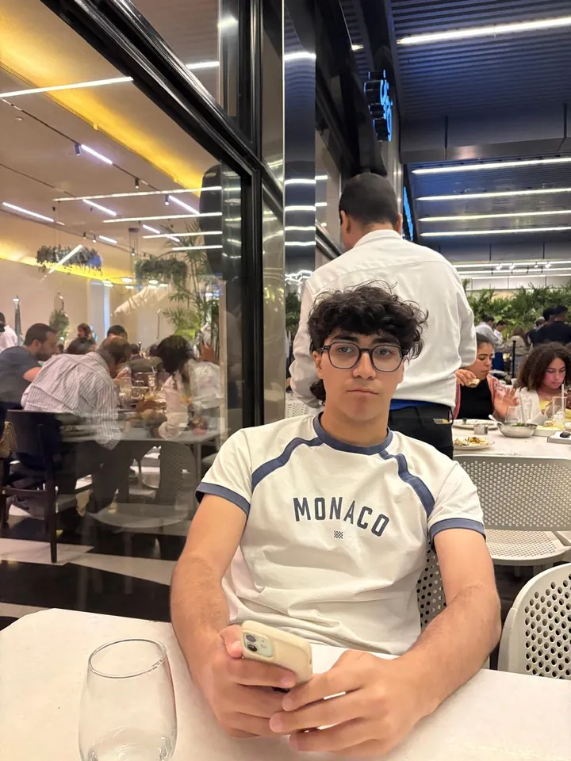

Hi, I'm Omar Rashad.
I study Data Science at Cairo University. I build with Python, SQL and C++, evaluate AI models for a living, and turn football data into stories you can read at a glance.

PythonSQLC++About me
The short version of who I am and what I care about.
I'm Omar, a Data Science student at Cairo University's Faculty of Computers and Artificial Intelligence, graduating in 2028. I like understanding how things work under the hood, which is why I've built a crypto exchange simulator and a data structures library in C++, designed a spa network database in SQL, and now turn match data into charts.
Alongside my studies I work remotely evaluating AI model responses, which keeps me careful about accuracy and clear guidelines. I speak Arabic natively and English fluently, and I'm looking for a data or sports-data internship where I can learn from a team and work on real problems.
Projects
Eight projects across analytics, databases and software. Filter them, and hover a card to see its drawing move.
Play corner
Three tiny games, each one tied to something I built. Pick one and try it.
From my football analytics project. Move over the pitch and tap to take shots at the goal at the top. The number is expected goals (xG), estimated from distance and angle by my own simple model, not StatsBomb's.
For scale: in the 2018 final, Real Madrid created 1.68 xG and Liverpool 1.43.
From my data structures library. Pick an algorithm and watch it sort. Gold bars are being compared.
From my smart waste management system. Bins fill up on their own. Dispatch a driver before they overflow.
Skills
What I work with, and how comfortable I am with each.
Journey so far
Where I started and where I'm heading.
- 2024: Started Data ScienceCairo University, Faculty of Computers and Artificial Intelligence.
- 2024: Began evaluating AI modelsRemote AI/LLM evaluator with Outlier AI.
- Along the way: team projectsC++, SQL and Excel projects built with classmates.
- Jul 2026: Operations administratorAttendance tracking and reports for about 86 ushers at Emaar Marassi Resort.
- Sep 2026: Power BI courseFinished a 17-hour Power BI Desktop course.
- Oct 2026: First football analytics projectMatch report on the 2018 Champions League final.
- Next: internship, then graduation in 2028Looking for a data or sports-data team to learn from.
Certificates
Full-time whistle blown on these courses.
Let's talk data
Hiring for an internship, or just want to chat about football and data? My inbox is open.
orashad661@gmail.com · open in your mail app instead